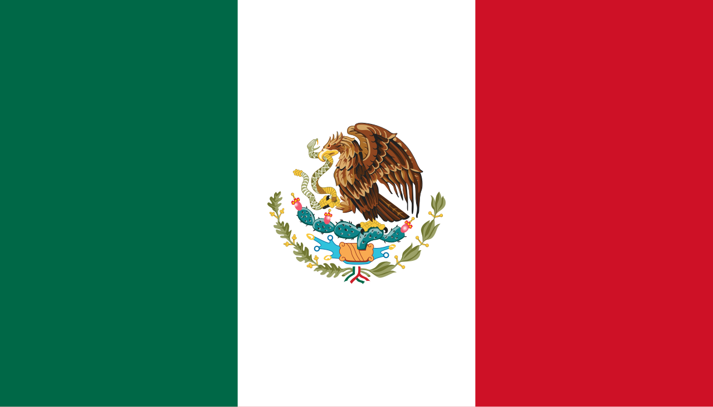

My name is Frodo. I'm from Mexico, i born in the Jalisco state and i live with my family in Durango state. I am currently working in a Hotel in reception and in the laundry. I have a small dog name Mike because of my brother Michael. I like to read books, comics, etc.
About Me
Durango, Mexico

Mexico is the middle contry in the America continent, usually know for being the first place that the spanish arrive. Today is know for being the only other country besides China for having is own Panda.